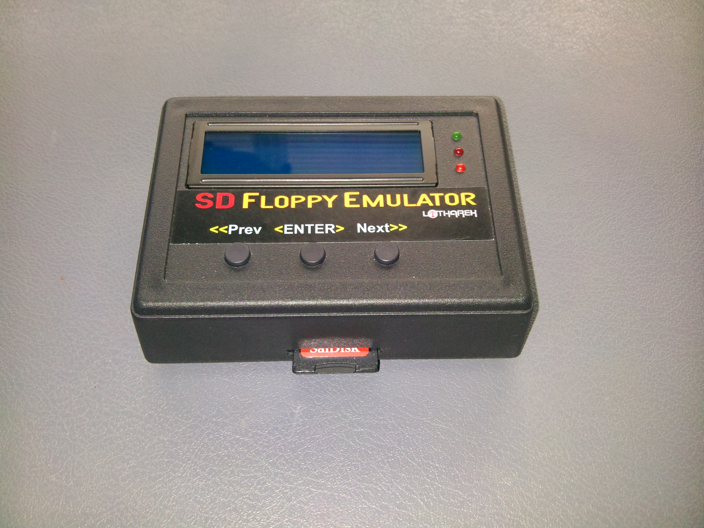
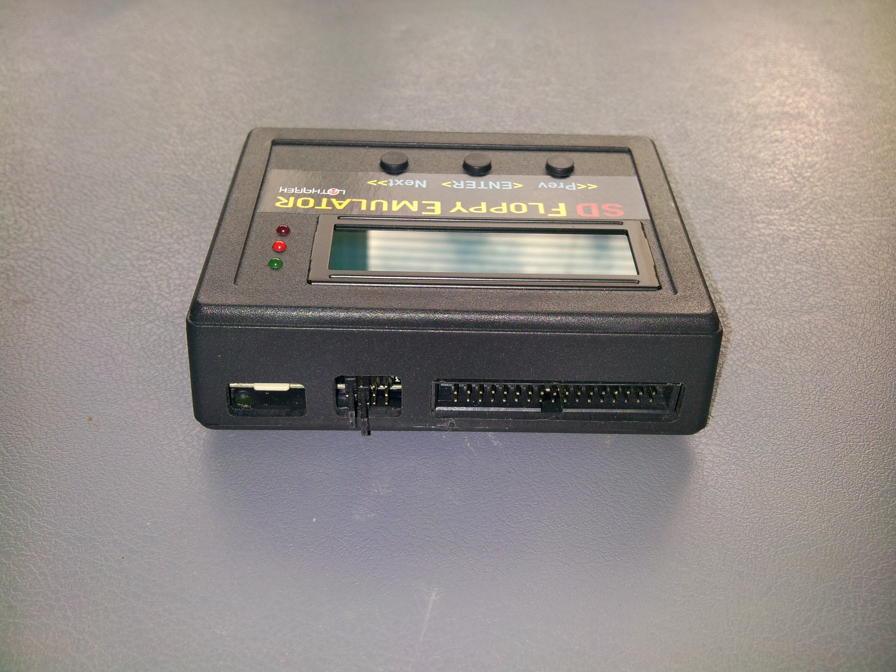
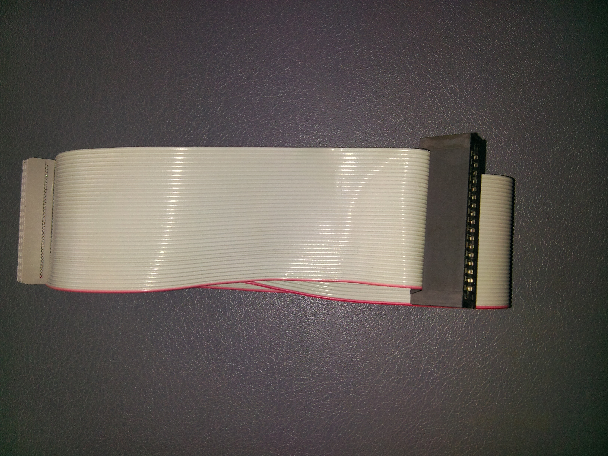

I purchased the HxC (http://hxc2001.com) SD floppy emulator rev C (cased) and connected it to the TRS-80 Model III external floppy port (as drives :2 and :3).
 
The TRS-80 drives are normally numbered as follows:
:0 = first internal drive
:1 = second internal drive
:2 = first external drive
:3 = second external drive
(It can also be connected to the internal floppy port (as drives :0 and :1) which would allow booting from the emulator, however this would obviously require removing the cover of the TRS-80.)
A normal straight-through (untwisted) ribbon cable was used between the TRS-80 and HxC. Make sure the cable is plugged the right way into the TRS-80 and HxC.
Use the standard Shugart jumper settings on the HxC, i.e. a jumper on ID0 for "Drive A" and a jumper on ID1 for "Drive B". Do not use ID2 or ID3 regardless of whether you're connecting it to the internal or external floppy port.
Note: HxC firmware V1.8.2.20a or later is required to change drive B disks on the TRS-80.
I created a simple YouTube video to demonstrate its use.
In the video I booted the TRS-80 using a normal physical floppy disk in internal drive :0.
I then used the LDOS SYSTEM command to swap physical drive :0 with emulated drive :2, which contained a disk image also with the LDOS system installed.
This allowed me to remove the physical floppy from drive :0. The LDOS command is:
SYSTEM (SWAP=0, DRIVE=2)
The DEVICES command can then be used to show the two emulated drives mounted as :0 and :3. The emulator supports DSDD80 (720kB) disk images, which is great for storing lots of programs. The standard physical TRS-80 Model III floppy disk is only SSDD40 (180kB).